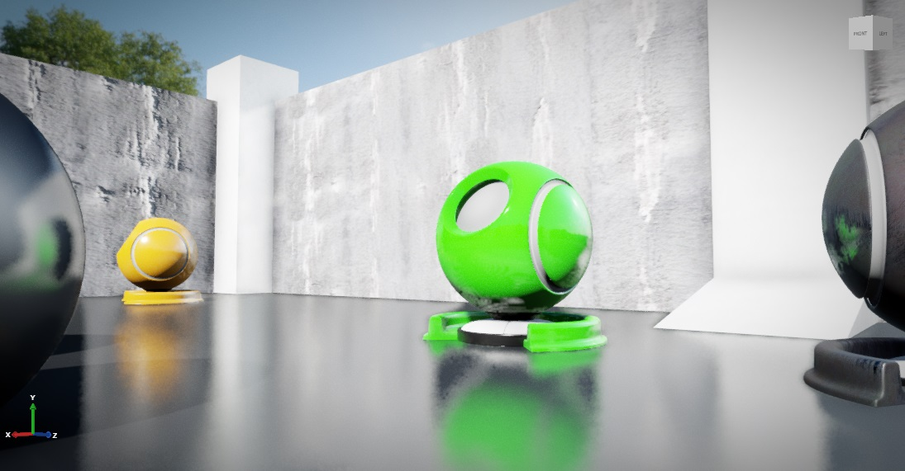
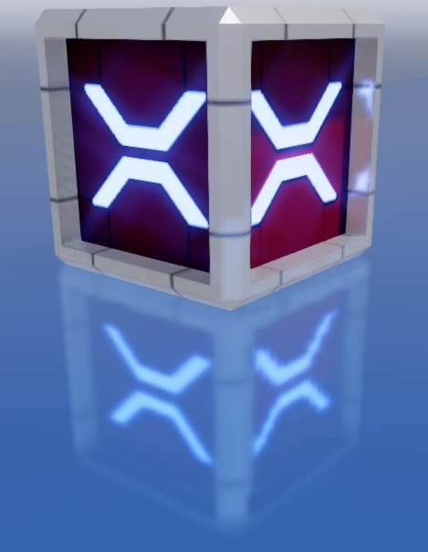
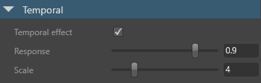
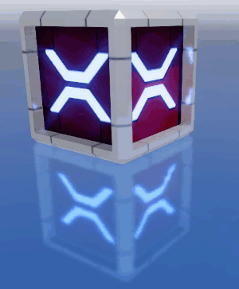

Local reflections
Intermediate Artist Programmer
Warning
Currently, local reflections aren't compatible with mobile platforms and cause crashes.
Note
As with other depth-aware post effects, enabling local reflections nullifies MSAA (multisample anti-aliasing).
When local reflections are enabled, the scene is reflected in glossy materials.

Local reflections dramatically increase the realism of scenes. They're most obvious when they reflect bright spots onto other surfaces. The effect is especially striking in dark scenes, which have high contrast, and in conditions with lots of reflective surfaces and highlights.

Where to use local reflections
Local reflections are a screenspace effect, which means they only reflect objects that are already on the screen; they don't reflect objects that are offscreen or obscured by other objects. Put simply, if the camera can't see an object at that moment, then that object isn't reflected.
This means local reflections work well in enclosed areas such as corridors and rooms, but less well in open spaces, where you'd expect more of the world to be reflected. They also work best on bumpy surfaces, which hide imperfections in reflections, and less well on very glossy, mirror-like surfaces. Missing reflections are noticeable in mirrors, for example.
Algorithm
Stride processes local reflections in four passes:
The raycast pass performs screenspace ray tracing over the depth buffer to find intersections.
The resolve pass resolves the rays and calculates the reflection color.
The temporal pass uses the history buffer to blur constantly between the current and previous frames. This reduces noise in the reflection, but produces an animated "jittering" effect that is sometimes noticeable. You can adjust or disable this step to create the effect you want.
The combine pass mixes the results of the effect with the rendered image.
Enable local reflections
To use local reflections, enable the effect in the graphics compositor.
In the Asset View (in the bottom pane by default), double-click the Graphics Compositor asset.

The graphics compositor editor opens.

Select the post-processing effects node.
Tip
If there's no post-process effects node, right-click and select Create > post-processing effects to create one. On the new forward renderer node, on the PostEffects slot, click and drag a link to the post-processing effects node.

In the Property Grid (on the right by default), enable Local reflections.

After you enable local reflections, the scene is reflected in glossy materials. You can use the gloss threshold (see below) to set how glossy materials should be to reflect the scene.
Properties
The local reflections properties affect all reflections in the scene.
Raycast properties

BRDF bias
The reflection spread. Higher values provide finer, more mirror-like reflections. This setting has no effect on performance. The default value is 0.82.
BRDF: 0.6 |
BRDF: 0.8 |
BRDF: 1.0 |
|---|---|---|
 |
 |
Depth resolution
Downscales the depth buffer to optimize raycast performance. Full gives better quality, but half improves performance. The default is half.
Gloss threshold
The amount of gloss a material must have to reflect the scene. For example, if this value is set to 0.4, only materials with a gloss map value of 0.4 or above reflect the scene. The default value is 0.55.
Note
If the Invert check box is selected in the material micro surface properties, the opposite is true. For example, if the reflections gloss value is set to 0.4, only materials with a gloss map value of less than 0.4 reflect the scene.
For more information about gloss, see Materials — geometry attributes.
Max steps
The maximum number of raycast steps allowed per pixel. Higher values produce better results, but worse performance. The default value is 60.
Note
This is the most important property for controlling performance.
Resolution
The raycast resolution. There are two options: full and half. Full gives better quality, but half improves performance. The default value is half.
Ray start bias
The offset of the raycast origin. Lower values produce more correct reflection placement, but produce more artifacts. We recommend values of 0.03 or lower. The default value is 0.01.
Start bias: 0.01 |
Start bias: 0.1 |
|---|---|
 |
|
| Larger gap between reflection and box (more correct) | Narrower gap between reflection and box (less correct) |
Resolve properties

Resolution
Calculates reflection color using raycast results. There are two options: full and half. Full gives the best results, but half improves performance. The default value is full.
Samples
The number of rays used to resolve the reflection color. Higher values produce less noise, but worse performance. The default value is 4.
Reduce highlights
Reduces the brightness of particularly bright areas of reflections. This has no effect on performance.
| Reduce highlights: on | Reduce highlights: off |
|---|---|
 |
Edge fade factor
The point at which the far edges of the reflection begin to fade. This has no effect on performance. The default value is 0.1.
Edge fade factor: 0 |
Edge fade factor: 0.5 |
|---|---|
 |
Use color buffer mips
Downscales the input color buffer and uses blurred mipmaps when resolving the reflection color. This produces more realistic results by blurring distant parts of reflections in rough (low-gloss) materials. It also improves performance on most platforms. However, it uses more memory, so you might want to disable it on (for example) mobile platforms.
Temporal properties

Temporal effect
Enables the temporal pass. This reduces noise, but produces an animated "jittering" effect that is sometimes noticeable. The temporal effect is enabled by default.
| Temporal effect: on | Temporal effect: off |
|---|---|
 |
 |
Note
If the temporal effect is disabled, the other temporal properties have no effect.
Response
How quickly reflections blend between the reflection in the current frame and the history buffer. Lower values produce reflections faster, but with more jittering. Note the jittering in the reflection below:

If the camera in your game doesn't move much, we recommend values closer to 1. The default value is 0.9.
Scale
The intensity of the temporal effect. Lower values produce reflections faster, but with more noise. The default value is 4.